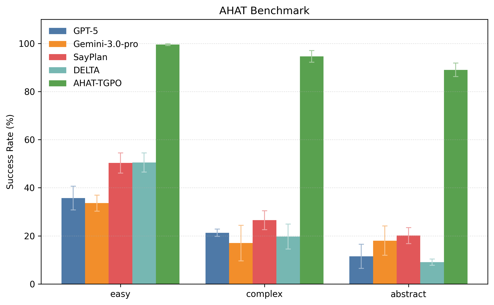
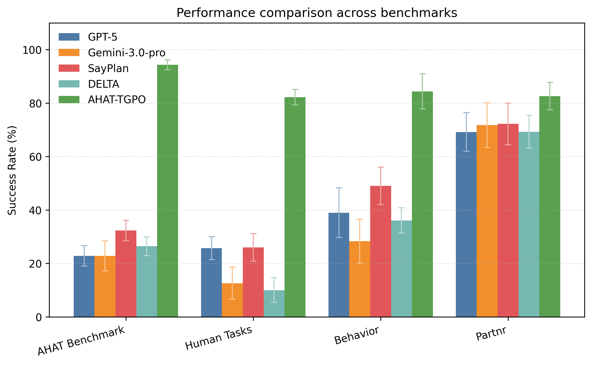
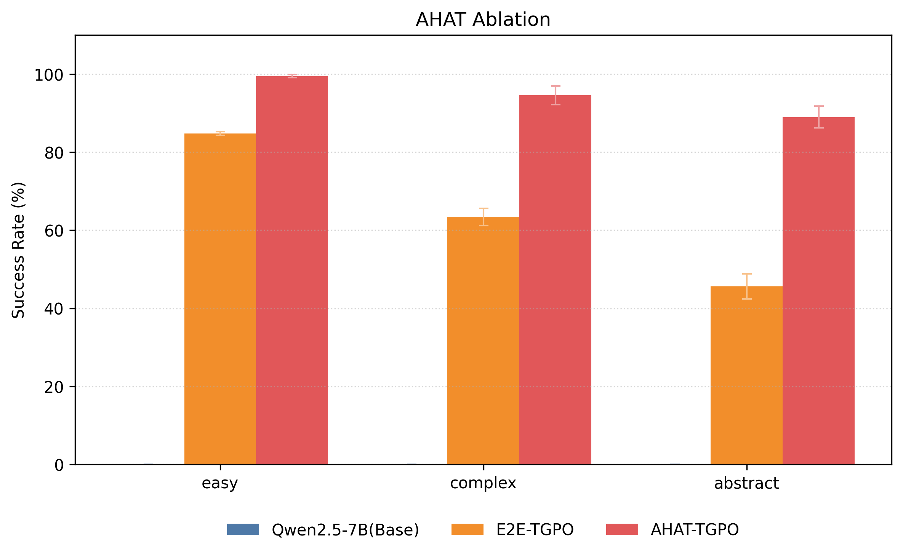
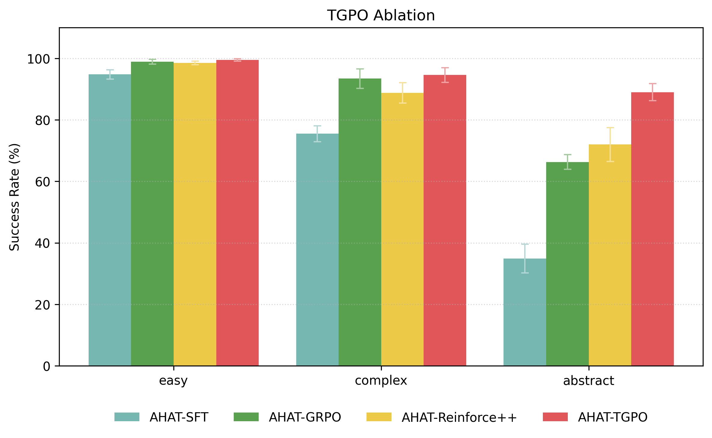
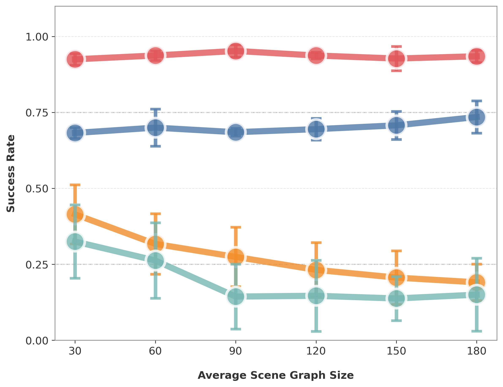

Video Presentation
Interactive Demo - Model Output
Explore AHAT's planning outputs by selecting different scenes and instructions.
Scene Graph
Select a scene graph to view the building hierarchy.
Model Output
Select a scene graph and instruction to see the output.
Execution Plan
Plan steps will appear here.
Interactive Demo - Execution Visualization
Select an instruction to see the complete planning and execution with video demonstration.
Model Output
Select an instruction to see the output.
Execution Plan
Plan steps will appear here.
Video Demonstration
Video will appear here.
Abstract
Open-world language-conditioned task planning is crucial for robots operating in large-scale household environments. While many recent works attempt to address this problem using Large Language Models (LLMs) via prompting or training, a key challenge remains: scalability. Performance often degrades rapidly with increasing environment size, plan length, instruction ambiguity, and constraint complexity. In this work, we propose Any House Any Task (AHAT), a household task planner optimized for long-horizon planning in large environments given abstract human instructions. At its core, AHAT utilizes an LLM trained to map task instructions and textual scene graphs into grounded subgoals defined in the Planning Domain Definition Language (PDDL). These subgoals are subsequently solved to generate feasible and optimal long-horizon plans through explicit symbolic reasoning. To enhance the model's ability to decompose complex and ambiguous intentions, we introduce TGPO, a novel reinforcement learning algorithm that integrates external correction of intermediate reasoning trace into Group Relative Policy Optimization (GRPO). Experiments demonstrate that AHAT achieves significant performance gains over state-of-the-art prompting, planning, and learning methods, particularly in human-style household tasks characterized by brief instructions but requiring complex execution plans.
Key Components
AHAT Planning Pipeline
Given a scene-task pair, AHAT predicts a sequence of sub-goals expressed in the Planning Domain Definition Language (PDDL), which are subsequently solved in sequence using off-the-shelf PDDL planners. To support structured reasoning, AHAT does not directly generate sub-goals in a single step. Instead, it first decomposes an abstract task into a sequence of natural-language sub-tasks, referred to as the decomposition trace, and then grounds each sub-task into a corresponding PDDL sub-goal.
Trace-Guided Policy Optimization (TGPO)
TGPO is a novel reinforcement learning algorithm that enhances the model's ability to decompose complex and ambiguous intentions. Unlike standard GRPO, TGPO integrates external correction of intermediate reasoning traces into the optimization process.
In the first pass, AHAT performs standard inference to produce a group of N candidate outputs, each consisting of a decomposition trace and a set of sub-goals. These outputs are evaluated using a composite reward function with two criteria: (1) feasibility, which checks whether the sub-goals can be successfully solved by the PDDL planner, and (2) task completion, which assesses whether the resulting action sequence fulfills all user intentions, verified by an auxiliary language model (the reviewer).
In the second pass, we perform trace improvement and trace-guided sub-goal regeneration. Only failed outputs are selected, and an external language model (the trace improver) revises their decomposition traces based on feedback from the PDDL planner and the reviewer. A second inference of AHAT is then conducted, where the revised trace is injected through token-level constrained sampling: tokens corresponding to the revised decomposition trace are forced during policy rollout, while sub-goals are generated autoregressively by the policy. Rewards are re-evaluated for the resulting plans, which are added back into the candidate group to compute group-relative rewards and derive robust policy gradients.
Experimental Results
Main Results
We evaluate AHAT on both our collected benchmarks and public benchmarks, comparing against state-of-the-art LLMs and prompting-based planners. Our approach demonstrates significant improvements across all metrics.
Evaluation Benchmarks
- AHAT Benchmark: Our newly constructed benchmark featuring large-scale household environments with abstract human instructions, designed to evaluate long-horizon planning capabilities under varying complexity.
- Human Benchmark: A benchmark composed of human-authored tasks collected via a web-based platform, designed to evaluate performance on real-world instructions beyond the synthesized corpus.
- BEHAVIOR: A public benchmark for household task planning that includes diverse manipulation tasks in realistic simulated environments.
- Partnr: A public benchmark focusing on object rearrangement tasks in household scenes, evaluating spatial reasoning and multi-step planning.


Ablation Study
We conduct two ablation studies to evaluate the impact of subgoal-based planning and trace-guided policy optimization (TGPO). Replacing subgoal generation with end-to-end action sequence prediction (E2E-TGPO) leads to substantial performance drops, especially on complex and abstract tasks, highlighting the importance of structured subgoal decomposition. In the second study, we replace TGPO with SFT, GRPO, and Reinforce++. While reinforcement learning methods outperform pure SFT, AHAT-TGPO achieves the best results, particularly on abstract tasks. These findings confirm that integrating trace revision through TGPO is critical for solving complex, high-level instructions.


Scalability Analysis
We systematically evaluate scalability across four dimensions: environment size, plan length, instruction abstraction, and task constraint complexity. As each dimension increases, we observe that AHAT maintains relatively stable performance, with only marginal degradation. In contrast, baseline methods exhibit significant performance drops as scalability increases. These results demonstrate AHAT’s robustness and effectiveness in handling large-scale environments, long-horizon planning, highly abstract instructions, and complex constraints.

BibTeX
@misc{liu2026housetaskscalablelonghorizon,
title={Any House Any Task: Scalable Long-Horizon Planning for Abstract Human Tasks},
author={Zhihong Liu and Yang Li and Rengming Huang and Cewu Lu and Panpan Cai},
year={2026},
eprint={2602.12244},
archivePrefix={arXiv},
primaryClass={cs.RO},
url={https://arxiv.org/abs/2602.12244},
}